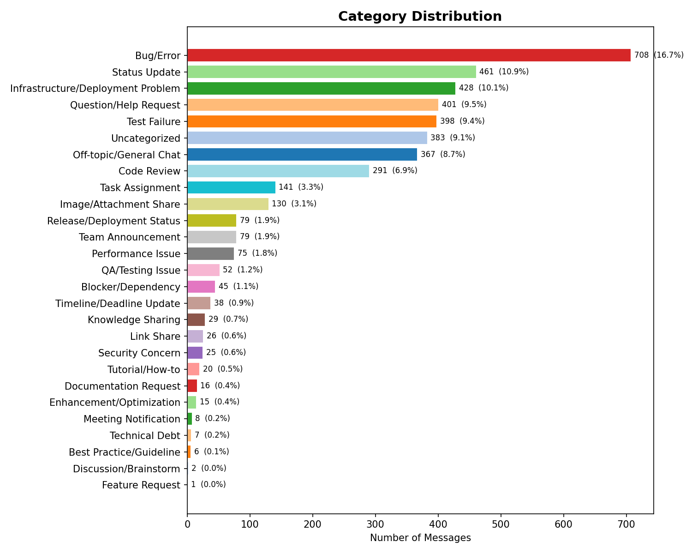

4,235 categorized messages spanning April 2023 through April 2026 across a 25-category taxonomy. Off-topic chatter was further subdivided by attachment and link presence, isolating approximately 3,300 actionable technical threads.

Bug/Error threads account for 16.7 percent of traffic, with fewer than half receiving any response. Response coverage across the top five resolvable categories averages below 50 percent.
Question and help requests have 29.8 percent response coverage. Engineers are asking for help and receiving silence the majority of the time, despite the category being the fourth-largest by volume.
Bug/Error threads average 362 minutes to first reply, Test Failure 321 minutes, Infrastructure and Deployment 291 minutes. At the 90th percentile these stretch to 11 to 12 hours, which closely mirrors the PST to IST workday gap.
When an issue is flagged as a blocker, the average first response time drops to 12 minutes. The organization responds decisively when urgency is communicated. The gap is consistent identification of what should be escalated.
Response coverage is the consistent weakness across every actionable category. Bug and error threads are the highest volume and receive responses less than half the time. The organization can respond fast when it needs to, as the blocker data shows. AI-driven triage has the most leverage in closing the identification and routing gap.